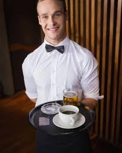
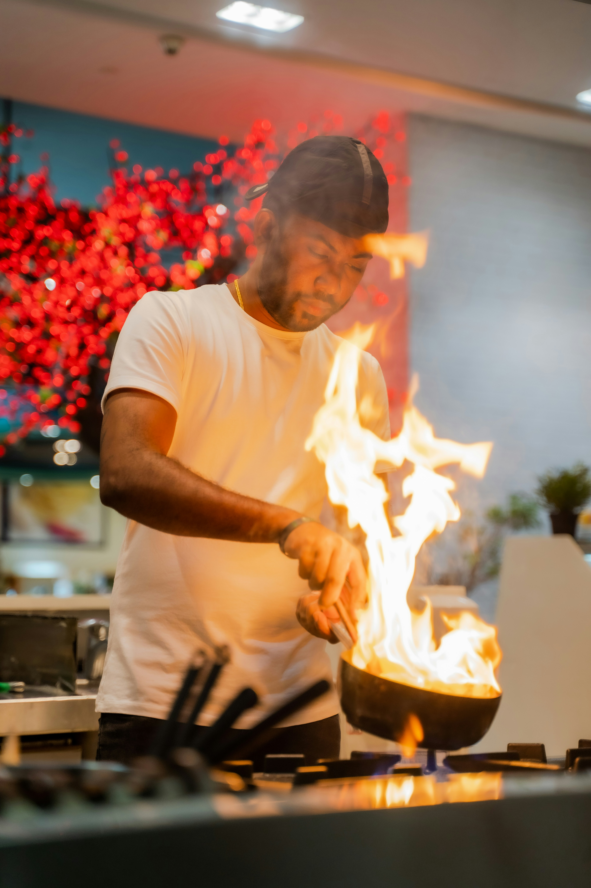
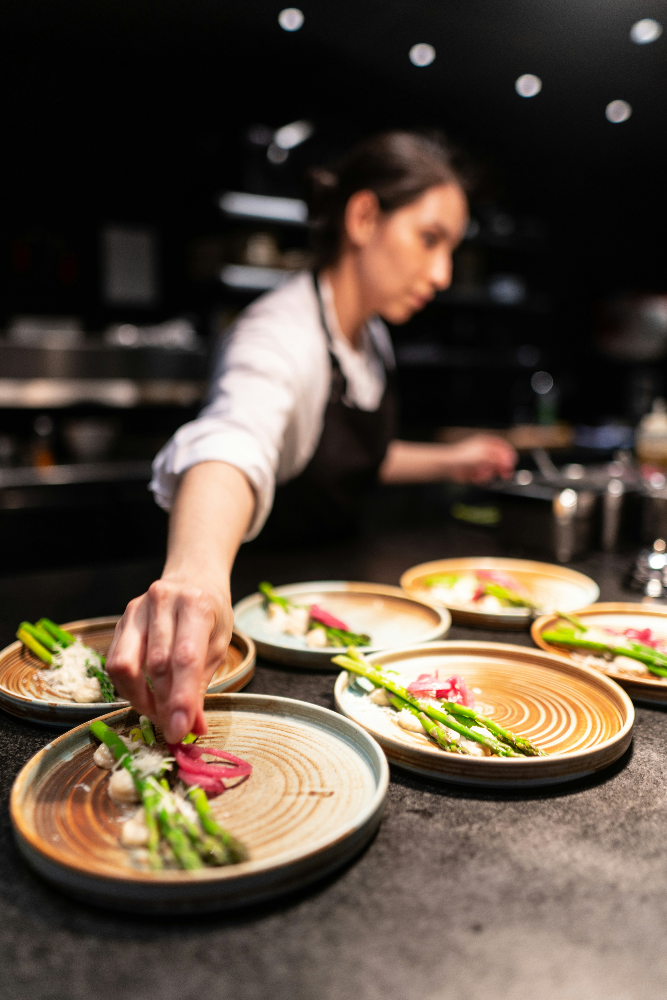

Restoran Kaleidoskop nastoji da svojim gostima pruži spoj kvalitetne hrane, prijatnog ambijenta i iskrenog gostoprimstva. Verujemo da restoran nije samo mesto na kojem se jede, već prostor u kojem se stvaraju uspomene, okupljaju prijatelji i uživa u malim životnim zadovoljstvima.
Naša gastronomska inspiracija oslanja se na raznovrsnost evropske kuhinje, sa posebnim interesovanjem za francusku kuhinju i njenu bogatu tradiciju. Francuska jela i francuski specijaliteti poznati su po pažnji posvećenoj detaljima, kombinovanju sastojaka i posebnom načinu predstavljanja hrane.
Ukoliko istražujete restorane u Petrovaradinu ili tražite restoran u okolini Novog Sada koji pruža prijatno iskustvo, Kaleidoskop želi da bude mesto na kojem ćete se osećati dobrodošlo.
Naša želja je da svaki gost pronađe razlog za povratak – bilo zbog hrane, atmosfere, druženja ili jednostavno zbog trenutka opuštanja.


